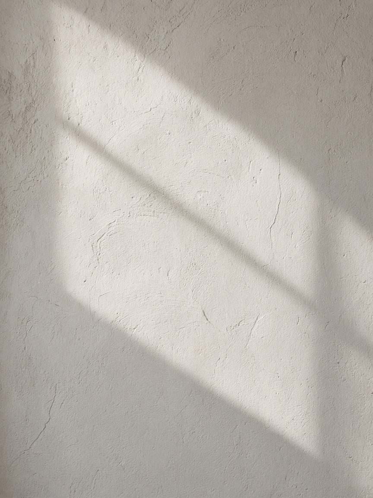

Ofisi Efe Bahri Toz yönetir. Başak Toz ve Macit Toz ile Abbasağa’da çalışır.
Baş mimar
Efe Bahri Toz
Ekip
Başak Toz
Ekip
Macit Toz
Malzeme
01 / 05
Küfeki taşıEski İstanbul yapılarının kireçtaşı. Ocaktan yumuşak çıkar, havayla sertleşir.

Kireç sıvaBuharı geçirir. Eski duvarın nemini içine hapsetmez.MeşeKorkulukta, eşikte, elin değdiği yerde. Kullandıkça koyulaşır.Karo mozaikEski apartman girişlerinin zemini. Kırılan karo aynı desenle yeniden dökülür.Dövme demirPencere parmaklığı, balkon korkuluğu. Boyası yenilenir, kendisi kalır.